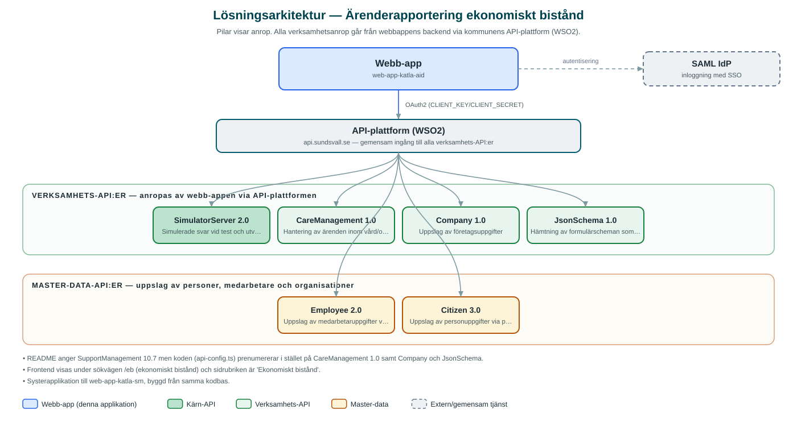

Ärenderapportering ekonomiskt bistånd
Webbtjänst där medarbetare rapporterar in ärenden och uppgifter kring ekonomiskt bistånd via guidade formulär.
Om applikationen
Tjänsten används för att registrera rapporter och ärenden som rör ekonomiskt bistånd. Användaren söker fram en person via personnummer eller en medarbetare via användarnamn, fyller i uppgifter steg för steg i en guidad formulärsprocess (wizard) med sammanfattning innan inskick, och kan spara utkast innan ärendet skickas in.
Inskickade rapporter samlas i en översikt där de kan filtreras och följas per status, ärendenummer och typ av rapport. Formulären styrs av centralt publicerade formulärscheman, vilket gör att innehållet i rapporterna kan ändras utan att tjänsten byggs om.
Tjänsten är under aktiv utveckling och är en systerapplikation till kommunens övriga ärendehanteringsappar byggda på samma grund. Exakt verksamhetsprocess kan därför fortfarande förändras.
Det här stödjer applikationen
- Guidad rapportering – Steg-för-steg-formulär med sammanfattning och kompletthetskontroll innan inskick.
- Personsökning – Sök på personnummer eller användarnamn för att koppla rapporten till rätt person eller medarbetare.
- Utkast – Rapporter kan sparas som utkast och färdigställas senare (funktion bakom funktionsflagga).
- Ärendeöversikt – Lista över inskickade ärenden med status, ärendenummer och typ av rapport, med filtrering.
- Schemastyrda formulär – Formulärens innehåll hämtas som formulärscheman från ett centralt API.
Teknisk dokumentation
Nedan beskrivs hur applikationen är uppbyggd, vilka API:er den använder och vad som krävs för att driftsätta den. Informationen är härledd ur källkoden och dess konfiguration på GitHub.
Arkitektur

Applikationen består av en webbaserad frontend (Next.js 16 (App Router), React 19, TypeScript, sk-web-gui, Tailwind CSS, Zustand, react-hook-form, RJSF (JSON Schema-formulär), i18next) och en backend (Node.js, Express, routing-controllers, Passport SAML) som utvecklas i samma kodbas. Verksamhetsanrop går via kommunens gemensamma API-plattform (WSO2) – frontend pratar aldrig direkt med underliggande system. Inloggning: SAML (SSO) med behörighetsgrupper. Övriga integrationer som förekommer i koden: SAML IdP, WSO2 API-gateway.
Teknikstack
- Frontend: Next.js 16 (App Router), React 19, TypeScript, sk-web-gui, Tailwind CSS, Zustand, react-hook-form, RJSF (JSON Schema-formulär), i18next
- Backend: Node.js, Express, routing-controllers, Passport SAML
- Test: Jest och Playwright (frontend), Vitest (backend)
API-beroenden
Applikationen konsumerar följande API:er via kommunens API-plattform. Versionerna är hämtade ur källkodens API-konfiguration.
| API | Version | Användning |
|---|---|---|
| SimulatorServer | 2.0 | Simulerade svar vid test och utveckling |
| CareManagement | 1.0 | Hantering av ärenden inom vård/omsorg och bistånd |
| Company | 1.0 | Uppslag av företagsuppgifter |
| JsonSchema | 1.0 | Hämtning av formulärscheman som styr rapportformulären |
| Employee | 2.0 | Uppslag av medarbetaruppgifter via användarnamn |
| Citizen | 3.0 | Uppslag av personuppgifter via personnummer |
Konfiguration och driftsättning
- .env-filer för frontend och backend utifrån .env-exempel
- CLIENT_KEY/CLIENT_SECRET mot kommunens API-gateway (WSO2)
- SAML-certifikat och nycklar (IdP-cert, privat nyckel, callback-URL:er)
- MUNICIPALITY_ID och NAMESPACE för ärendehanteringen
- USE_LOCAL_SCHEMAS för att läsa formulärscheman lokalt under utveckling
- Funktionsflaggor, t.ex. NEXT_PUBLIC_DRAFT_ERRAND och inaktivitetsvarning med automatisk utloggning
Noterbart ur källkoden
- README anger SupportManagement 10.7 men koden (api-config.ts) prenumererar i stället på CareManagement 1.0 samt Company och JsonSchema.
- Frontend visas under sökvägen /eb (ekonomiskt bistånd) och sidrubriken är 'Ekonomiskt bistånd'.
- Systerapplikation till web-app-katla-sm, byggd från samma kodbas.
- Inaktivitetsvarning med nedräkning till automatisk utloggning är konfigurerbar.
Källkod
Källkoden är öppen och finns hos Sundsvalls kommun på GitHub. I källkodsförrådet finns även instruktioner för att klona, konfigurera och starta applikationen i egen miljö.